// La Cena
Sezione 01. In cui un amico compra il futuro dell'umanitàCena a casa mia. L'amico (chiamiamolo Marco, che tanto ci si riconosce) arriva e annuncia che ha ordinato una macchina elettrica. Non una qualsiasi. Una che costa quanto un bilocale in provincia. “Lo devo al pianeta”, dice, mentre si siede. “Il futuro dell'umanità dipende da questo.”
Annuisco. La iena mi guarda. Mi conosce. Sa che ho appena classificato mentalmente Marco nella categoria “bruciati dalle droghe pesanti”. Non le pesanti vere, quelle almeno ti lasciano delle storie interessanti. Parlo di quelle più subdole: i titoli di giornale, i documentari con la musica triste, i grafici a hockey stick proiettati sullo schermo durante le conferenze TED. La droga del “la scienza dice che” senza aver mai aperto un paper.
Marco se ne va. La iena, che è una iena ma non è scema, mi dice: “Lo hai declassato.” Non era una domanda.
“Sì.”
“Spiega.”
E qui parte il problema. Perché non puoi spiegare a una iena che i modelli climatici sono fragili dicendo “ho letto su internet che”. La iena ti mangia vivo. La iena vuole prove. Codice. Numeri. Roba che gira. Roba che può verificare.
“Ok”, le dico. “Facciamo una cosa. Apriamo il modello climatico che l'IPCC usa per calcolare quanto ci resta da vivere, e guardiamo dentro. Il codice, la matematica, i parametri. Tutto.”
La iena alza un sopracciglio. “Esiste un modello che puoi aprire?”
Sì. Si chiama FaIR. Finite Amplitude Impulse Response. Versione 2.2.4. Open source, su GitHub, scritto in Python. È uno dei due modelli che l'IPCC usa nel Sesto Report (AR6, 2021) per calcolare le proiezioni di temperatura, i carbon budget residui, i numeri che finiscono negli accordi di Parigi. L'altro è MAGICC, ma quello è chiuso. FaIR è aperto. Possiamo smontarlo.
pip install FaIR. Tre secondi. Fatto.
// L'Anatomia
Sezione 02. 30 file, 2001 righe, 2064 numeriCome con il Mersenne Twister, il primo passo è aprire e contare i pezzi. Il modello intero sta in 30 file Python. La “fisica”, le equazioni che simulano il clima terrestre, sta in 7 file:
| File | Righe | Cosa fa |
|---|---|---|
energy_balance_model.py | 279 | Il cuore: converte forcing in temperatura |
fair.py | 1380 | Orchestratore (più setup che fisica) |
forcing/ghg.py | 218 | Forcing radiativo dei gas serra |
forcing/aerosol/erfaci.py | 43 | Aerosol-nuvole (il grande jolly) |
forcing/aerosol/erfari.py | 25 | Aerosol-radiazione |
gas_cycle/__init__.py | 26 | Scaling dei tempi di vita |
gas_cycle/forward.py | 30 | Il ciclo del carbonio |
Totale: 2001 righe di codice. Il futuro del pianeta calcolato in meno righe di un e-commerce medio.
Ma il numero che conta è l'altro. Il file species_configs_properties.csv nella cartella defaults/data/ar6/ contiene i parametri di default: 64 specie chimiche, 42 parametri ciascuna. Totale: 2064 valori numerici. Più parametri che righe di codice. Meno fisica, più manopole.
Il rapporto: 2001 righe di codice, 2064 valori calibrati. Non sono tutti indipendenti, molti sono correlati e vincolati. Ma il parco giochi è grande, e il risultato ci passeggia dentro.
Uno potrebbe dire: “quei parametri non sono scelti a caso, sono calibrati sui modelli complessi e sui dati osservativi.” Vero. FaIR non è la fisica di base. È un emulatore: una versione compressa dei modelli grossi. I 2064 numeri non sono inventati, sono ereditati.
Ma questo sposta il problema, non lo risolve. Le decisioni da trilioni si basano su una catena di modelli a complessità decrescente: la fisica vera, il modello complesso che la simula, il modello semplice che simula il modello complesso. Ogni passaggio perde qualcosa. Quanto? Buona domanda. La iena la farebbe.
// Il Ciclo del Carbonio Fittizio
Sezione 03. 4 box, nessuno fisico
La prima cosa che apro è gas_cycle/forward.py. Trenta righe. Qua dentro c'è il “ciclo del carbonio”, cioè la risposta alla domanda: quando emettiamo CO2, quanta resta in atmosfera e per quanto tempo?
La risposta di FaIR: la CO2 emessa viene divisa in 4 “box” matematici, ciascuno con un tempo di vita diverso:
| Box | Lifetime | Frazione | Significato |
|---|---|---|---|
| 0 | 1.000.000.000 anni | 21.73% | Resta per sempre |
| 1 | 394.4 anni | 22.40% | Oceano profondo (lento) |
| 2 | 36.54 anni | 28.24% | Assorbimento medio |
| 3 | 4.304 anni | 27.63% | Biosfera (rapido) |
La iena guarda lo schermo. “Cosa sono questi box?”
Non sono posti reali. Sono una scorciatoia matematica: quattro curve esponenziali che, sommate, approssimano come la CO2 viene assorbita. Non c'è un “box 0” in atmosfera dove la CO2 si mette comoda per un miliardo di anni. C'è una formula con parametri scelti per far tornare i conti. La formula nel codice è questa:
gas_cycle/forward.py, righe 74-86. p = partition fraction, τ = lifetime, α = scaling factor.
Il bello è quel parametro \(\alpha\). Da dove viene? Da un'altra formula:
gas_cycle/__init__.py. Il tempo di permanenza della CO2 dipende dalla temperatura.
Ecco la circolarità: il tempo di vita della CO2 dipende dalla temperatura. Ma la temperatura dipende da quanta CO2 c'è in atmosfera. Che dipende dal tempo di vita. È un serpente che si morde la coda, e tutti i coefficienti (“iirf_0”, “iirf_uptake”, “iirf_temperature”) sono fitting parameters. Numeri scelti per far tornare i conti con le osservazioni. Non derivati da chimica.
Nota: cambiando la “partition fraction” del box 0 dal 21.73% al 35%, la CO2 che “resta per sempre” aumenta di metà, e con essa le proiezioni di temperatura. Cambiandola al 10%, il problema quasi scompare. Entrambi i valori sono difendibili perché i box non sono fisici. Sono scelte.
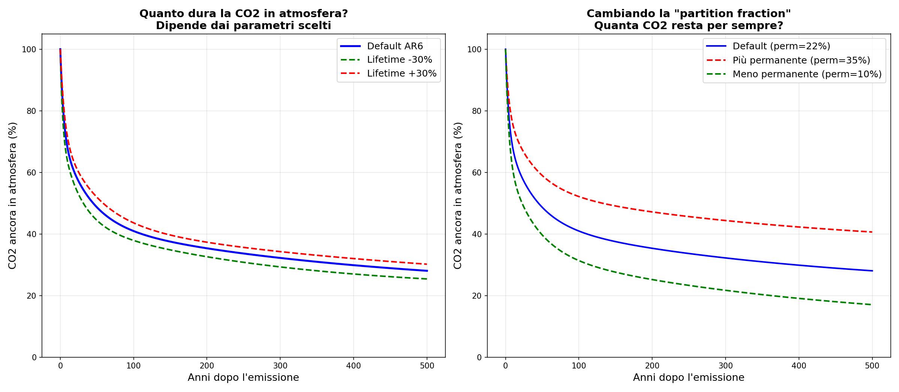
// Quattro Formule, Una Scelta
Sezione 04. ghg.py: dimmi quale vuoi
Apro forcing/ghg.py. 478 righe. Qua dentro ci sono le formule che convertono le concentrazioni di gas serra in forcing radiativo, cioè in quanti watt per metro quadro in più trattiene l'atmosfera. È il passaggio cruciale: è da qui che viene il riscaldamento.
FaIR offre quattro formule per fare questo calcolo:
| Formula | Anno | Coefficiente dominante | Relazione |
|---|---|---|---|
myhre1998 | 1998 | 5.35 | Originale |
etminan2016 | 2016 | 5.36 | Aggiornamento di Myhre |
meinshausen2020 | 2020 | 5.25 | “Rescaled Etminan” |
leach2021 | 2021 | 4.57 | “Re-fit of Etminan” |
Convergono? Sì. Ma non per il motivo che pensi.
Il codice sorgente lo dice esplicitamente. Riga 162 di ghg.py: “This is a rescaled [Etminan2016] function.” Riga 399: “This is a re-fit of the [Etminan2016] formulation.” E Etminan2016 è un aggiornamento di Myhre1998.
Sono tutte la stessa formula riscritta. Non sono quattro misurazioni indipendenti che convergono sullo stesso risultato. Sono quattro versioni della stessa curva adattata agli stessi dati.
Uno potrebbe dire: “non sono intercambiabili a piacere, ogni versione include spettri aggiornati, interazioni tra gas, miglioramenti di precisione fuori dal range base.” Vero, non sono copie identiche. Ma condividono la stessa radice, gli stessi dati di calibrazione, la stessa struttura funzionale. La convergenza nella zona calibrata non è una conferma indipendente. È una conseguenza della genealogia.
E c'è un dettaglio in più. Le formule sono calibrate su concentrazioni di CO2 tra 280 e 420 ppm, i dati che abbiamo. Le previsioni per il 2100 richiedono concentrazioni di 500-1000 ppm. In quella zona le formule divergono. Ma nessuna ha dati reali per dire chi ha ragione, perché nella storia umana non ci siamo mai stati.
L'analogia: è come avere un GPS calibrato nella tua città e usarlo per navigare su Marte. Nella tua città funziona benissimo. Su Marte, non lo sai. E tutte le “versioni aggiornate” del GPS sono state calibrate nella stessa città.
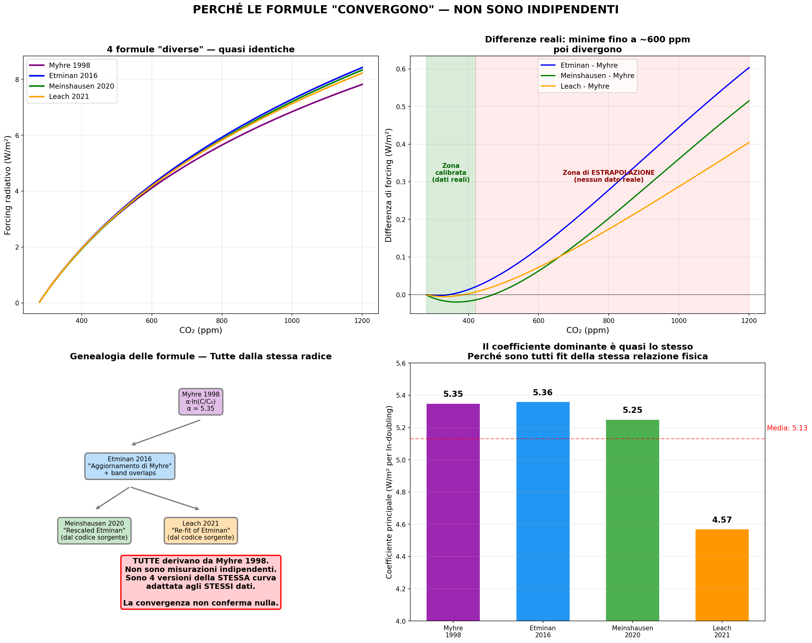
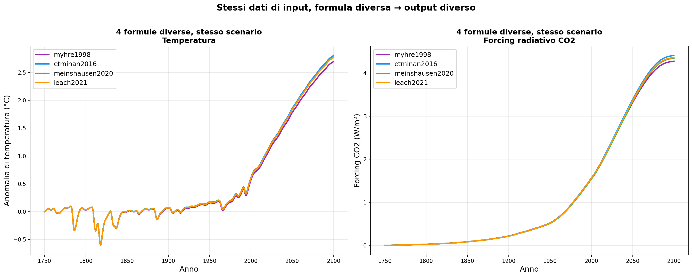
// Il Moltiplicatore
Sezione 05. forcing_scale: il parametro che non dovresti vedere
In ogni formula di forcing c'è un parametro chiamato forcing_scale. Ecco cosa fa: moltiplica il risultato. Non rappresenta una grandezza direttamente osservabile, ma una parametrizzazione del forcing effettivo: la differenza tra forcing istantaneo e risposta reale del sistema. Di fatto, una manopola che scala l'output di qualsiasi specie.
Il default è 1.0 per tutte e 64 le specie. Ma nessuno ti impedisce di metterlo a 0.8, o a 1.2. ±20% su questo singolo numero cambia le proiezioni di temperatura di circa 0.7°C nel 2100. La differenza tra “ce la facciamo” e “non ce la facciamo”.
La iena: “Ma qualcuno lo cambia davvero?”
È previsto dal design. Il parametro esiste perché il forcing “effettivo” (ERF) non è lo stesso del forcing “istantaneo”. La differenza tra i due viene gestita con un moltiplicatore. Quanto vale quel moltiplicatore? Dipende dalla stima. La stima dipende da altri modelli. Turtles all the way down.
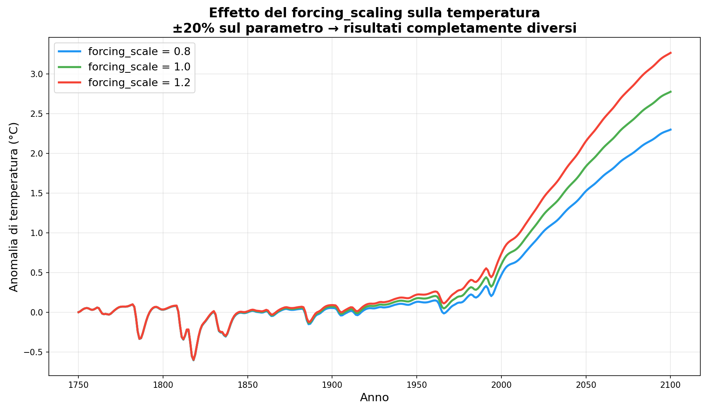
// L'Energy Balance Model
Sezione 06. energy_balance_model.py: la Terra in una matrice
L'ultimo pezzo. energy_balance_model.py, 279 righe di codice effettivo. Qui il forcing radiativo viene convertito in temperatura. La Terra viene rappresentata come strati di oceano impilati che scambiano calore. La matematica è un sistema di equazioni differenziali lineari, risolto con esponenziale di matrice:
energy_balance_model.py, riga 309. M = matrice energy balance, d = forcing vector, F = forcing.
Elegante. Compatta. E completamente governata da parametri:
ocean_heat_capacity: quanta energia assorbe ogni strato. Non misurata direttamente, stimata.ocean_heat_transfer: quanto calore passa tra strati. Non misurato, stimato.deep_ocean_efficacy: un fattore di “efficacia” dell'oceano profondo. Default: 1.28. Perché 1.28? Perché quel valore fa tornare i conti con le osservazioni.forcing_4co2: forcing da quadruplicamento della CO2. Default: 8.0 W/m². Range nella letteratura: 6.5–9.5.
La Climate Sensitivity, quanto si scalda la Terra per un raddoppio di CO2, il numero più citato nella scienza del clima, non è un input. È una proprietà emergente di questi parametri. Cambi i parametri, cambi la sensitivity. E il range accettato dall'IPCC è enorme: da 2.0 a 5.0°C.
// I Limiti Strutturali
Sezione 07. Non i parametri. La forma del modello.La iena a questo punto dice: “Ok, i numeri sono discutibili. Ma le equazioni? Quelle almeno sono giuste?” Bella domanda. Guardiamo.
Linearità. Raddoppi il forcing, raddoppi la temperatura. FaIR funziona così. Ho verificato: R² = 0.978 tra forcing e temperatura. Praticamente una retta. Ma il clima reale non è una retta. Le nuvole cambiano comportamento, il ghiaccio che si scioglie cambia l'albedo, la circolazione oceanica può saltare di regime. FaIR schiaccia tutto questo in coefficienti costanti. Come guidare con il navigatore che conosce solo le strade dritte.
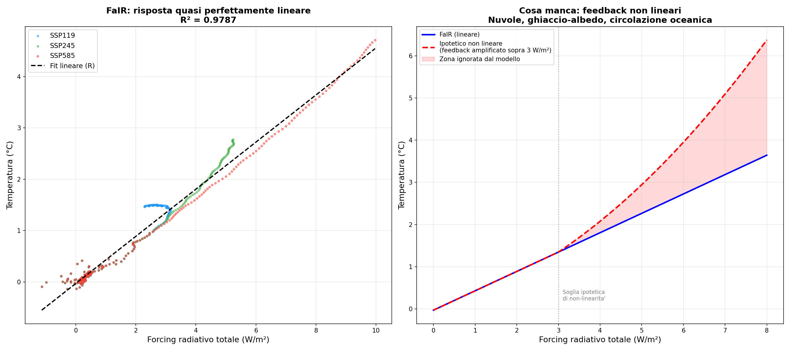
Nessun tipping point. Ho fatto girare tutti e 5 gli scenari SSP. Le curve sono sempre lisce. Sempre. FaIR non può produrre salti di regime per costruzione. Ma il clima reale potrebbe avere punti di non ritorno: la circolazione atlantica che collassa, il permafrost che sgela di botto, le calotte che si staccano. FaIR non può nemmeno immaginare queste cose. Non perché non esistano. Perché le equazioni non le prevedono.
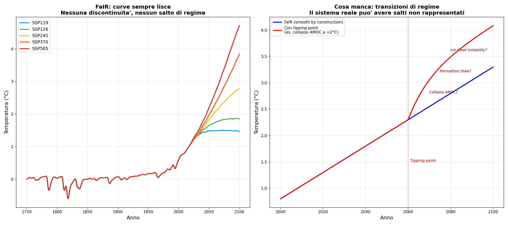
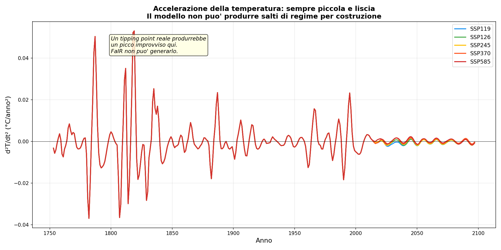
Il percorso non conta. Ho confrontato SSP2-4.5 e SSP5-8.5 quando raggiungono le stesse emissioni cumulative (5148 GtCO2). Uno ci arriva nel 2100, l'altro nel 2060. Differenza di temperatura: 0.13°C. Per FaIR conta il totale, non come ci arrivi. Ma versare un litro d'acqua in una vasca in un minuto o in un'ora non è la stessa cosa. Specialmente se la vasca ha dei buchi che cambiano dimensione nel tempo.
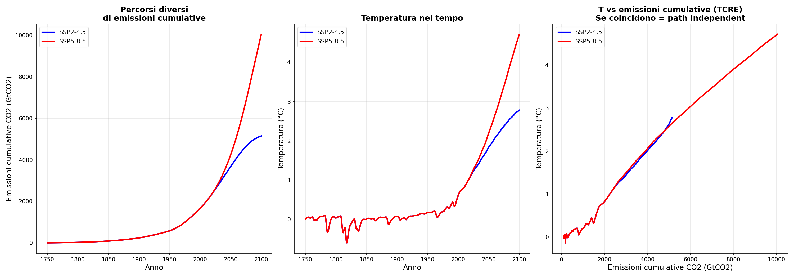
Zero dimensioni. FaIR produce un numero per anno. Uno. Nessuna latitudine, nessun oceano, nessuna stagione. È come descrivere la temperatura di tutta Italia con un numero solo. “In Italia fa 18 gradi.” Dove? Boh. L'Artico si scalda 2-4 volte più della media globale, ma FaIR non lo sa perché non ha una mappa.
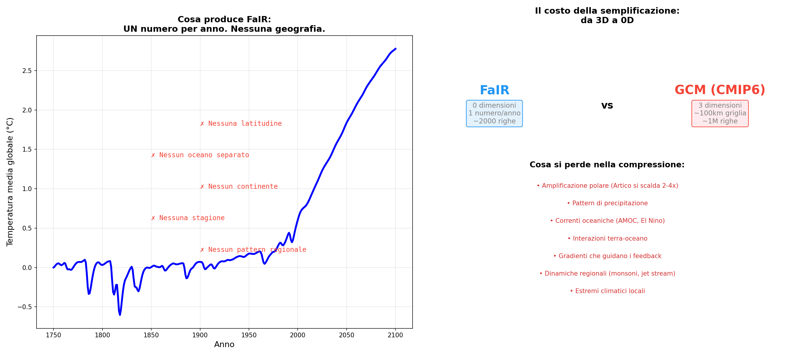
Tutto in un numero. La Climate Sensitivity prende nuvole, vapore, ghiacci, lapse rate e li ficca in un unico valore. Tre configurazioni oceaniche diverse, con ECS simile, si scaldano in modi completamente diversi: una parte veloce e poi rallenta, un'altra parte piano e poi accelera. L'ECS non vede la differenza. È come giudicare un pilota dal tempo sul giro senza guardare come guida.
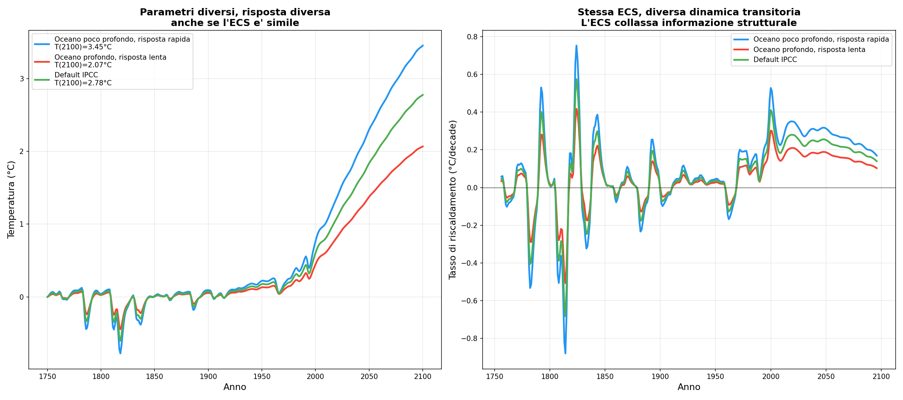
La parte che non vedi. Cambiare i numeri sposta il risultato di 2.26°C. Cambiare formula di 0.11°C. Ma i tipping points, le dinamiche spaziali, i feedback non lineari? Non sono nemmeno nel modello. Non puoi quantificare quello che non rappresenti. È il classico problema del lampione: cerchi dove c'è luce, non dove hai perso le chiavi.
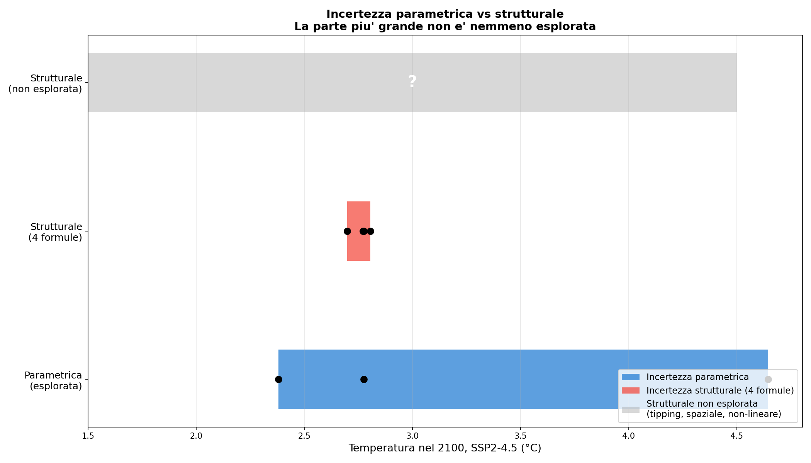
Anche la probabilità è una scelta. Stesso range di ECS (2–5°C), quattro distribuzioni diverse. La probabilità di superare una soglia cambia a seconda della forma che scegli. Le probabilità non sono proprietà del clima. Sono proprietà del modello. Il pubblico le legge come “certezza scientifica”. I modellisti sanno che sono assunzioni propagate. La iena: “Quindi quando dicono 66% di probabilità...” Quel 66% dipende dalla distribuzione che hai scelto, sì.
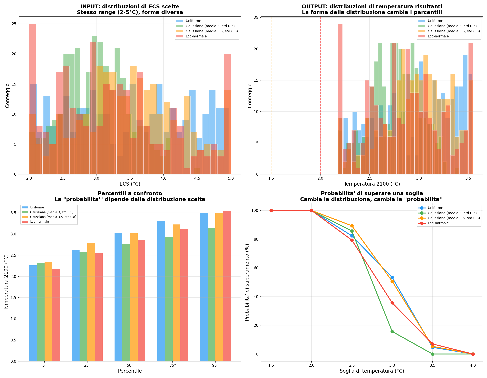
Addestrare e testare sullo stesso dataset. Ho calibrato FaIR su tre periodi diversi. Tutte e tre le calibrazioni fittano il proprio periodo. Ma per il futuro divergono: da 2.2 a 3.9°C. Stimi parametri lenti (oceano profondo, secoli) con dati corti (150 anni). Chiunque faccia machine learning sa che questo finisce male.
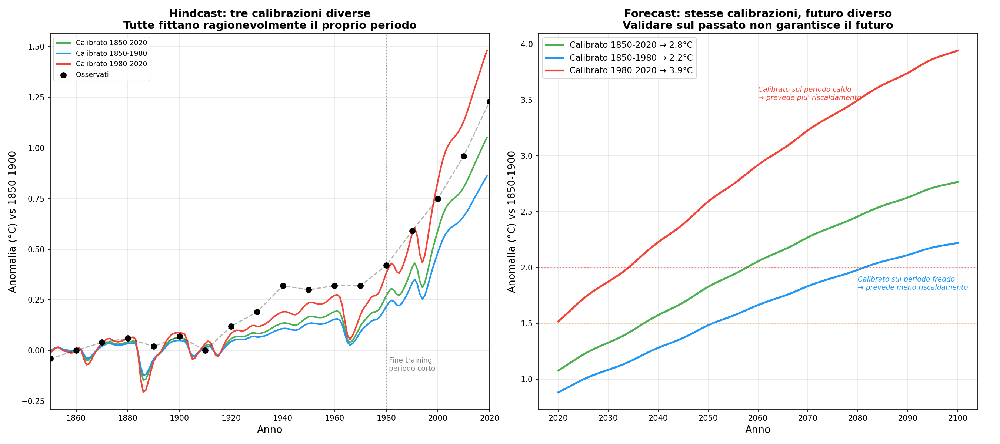
Giusto per i motivi sbagliati. Questo è il colpo di grazia. Ho costruito tre configurazioni: una bilanciata, una con troppo CO2 compensato da troppi aerosol, una al contrario. Nel passato convergono tutte. Stessi dati, stesse curve, nessuno vede la differenza. Ma nel futuro, quando l'aria diventa più pulita e gli aerosol calano, la compensazione salta. Divergono: da 2.4 a 3.3°C. Il modello può passare l'esame copiando, e nessuno se ne accorge finché non cambia la domanda.
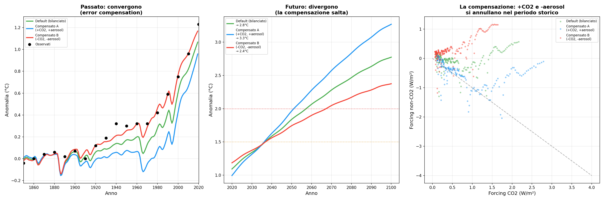
457 soluzioni, stessi dati. Ho generato 1000 configurazioni random e filtrato quelle che fittano le temperature al 2020 entro ±0.3°C. Ne passano 457. Quasi la metà. Ma per il 2100 danno da 1.8 a 4.6°C. In matematica questo si chiama problema inverso mal posto. In italiano: i dati che abbiamo non bastano a scegliere tra le soluzioni. Molte risposte diverse sono tutte compatibili con quello che sappiamo. Non stai modellando il clima. Stai modellando quanto non sai del clima.
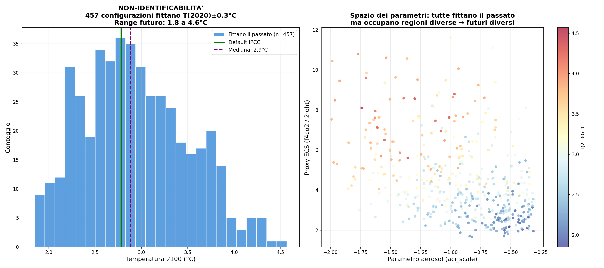
Il punto vero: FaIR non simula il clima. Simula quanto non sappiamo del clima. I parametri sono la nostra ignoranza compressa in numeri. Le distribuzioni sono le nostre ipotesi sull'ignoranza. L'output è l'ignoranza propagata attraverso le equazioni. Quello che esce non è una previsione del clima. È una previsione di quello che il modello pensa del clima. Che è una cosa molto diversa.
Il punto: alcune incertezze non riguardano i numeri. Riguardano la forma. Un modello lineare, senza geografia, che non può saltare di regime, calibrato su 150 anni per prevederne 100, con probabilità scelte e non derivate. E soprattutto: FaIR non valida i modelli complessi. Li copia in formato compresso. Quando tre modelli “convergono”, non è indipendenza. È genealogia.
// Lo Stress Test
Sezione 08. Stesso scenario, risultati molto diversiOk. Basta teoria. Facciamo girare il modello. Prendo lo scenario SSP2-4.5, quello “intermedio”, il più citato, e cambio solo i parametri climatici. Tutti dentro il range accettato dalla letteratura. Stesse emissioni, stessa CO2, stessi aerosol. Solo le manopole dell'energy balance e del forcing.
Tre configurazioni: ottimista (tutti i parametri al bordo basso), default IPCC, pessimista (tutti al bordo alto).
Risultato:
| Configurazione | T nel 2100 | Rispetto a Parigi |
|---|---|---|
| Ottimista estremo | +1.71°C | Sotto il target 2.0°C |
| Default IPCC | +2.78°C | Sopra entrambi i target |
| Pessimista estremo | +7.66°C | Fine del mondo |
Range: 5.95°C. Stesse emissioni. Stessa CO2 in atmosfera. Stessa fisica di base. Solo parametri diversi, tutti “accettabili”. La differenza tra “nessun problema” e “catastrofe senza precedenti” sta nella scelta dei numeri che metti nella matrice.
La iena: “Aspetta. Come fanno a pubblicare previsioni se il range è così?”
Scelgono un sottoinsieme di parametri “best estimate”. Ma il best estimate è una scelta, non una misura.
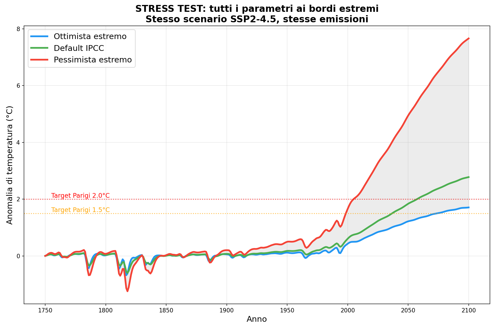
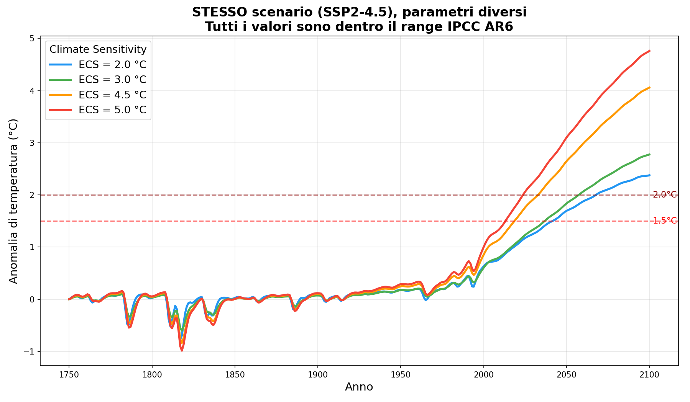
// 10.000 Futuri Possibili
Sezione 09. Monte Carlo: il ventaglio realePer mostrare il ventaglio completo, faccio una cosa che qualsiasi ingegnere farebbe: un'analisi Monte Carlo. Genero 10.000 combinazioni di parametri, tutti estratti uniformemente dentro il range accettato. Climate sensitivity, forcing, aerosol, capacità termica, trasferimento di calore. Tutti randomizzati. Tutte le 10.000 run usano lo stesso scenario SSP2-4.5.
Risultato:
| Percentile | T nel 2100 |
|---|---|
| Minimo | +1.01°C |
| 5° percentile | +1.48°C |
| 25° percentile | +1.95°C |
| Mediana | +2.42°C |
| 75° percentile | +3.14°C |
| 95° percentile | +4.54°C |
| Massimo | +9.01°C |
Da 1 a 9 gradi. Con lo stesso scenario di emissioni. Solo il 5.5% delle combinazioni sta sotto 1.5°C. Ma il 28% sta sotto 2.0°C. Il default IPCC (2.78°C) non è “la previsione”. È un punto in una distribuzione enorme.
Uno potrebbe dire: “il tuo Monte Carlo è libero, i parametri nella realtà sono correlati e vincolati. L'IPCC li filtra con temperature storiche, contenuto termico degli oceani, forcing osservati. Il range vincolato è 2–4°C, non 1–9.”
Giusto. Il nostro Monte Carlo sovrastima l'incertezza perché tratta i parametri come indipendenti. Ma anche il range “vincolato” dell'IPCC merita attenzione. L'ECS “likely” va da 2.5 a 4.0°C, la “very likely” da 2.0 a 5.0°C. Su uno scenario intermedio come SSP2-4.5, questo si traduce comunque in una forchetta di oltre un grado nel 2100. Abbastanza per cambiare radicalmente le politiche necessarie. E il vincolo viene da osservazioni che coprono 170 anni su un sistema che risponde su scale di secoli.
Il punto: anche con vincoli, il range è enorme. E quando senti “il modello prevede X gradi”, la domanda giusta è: con quali parametri? Il Monte Carlo libero esagera, ma il numero singolo sui giornali sottostima l'incertezza reale. La verità sta in mezzo, ed è comunque un ventaglio, non un punto.
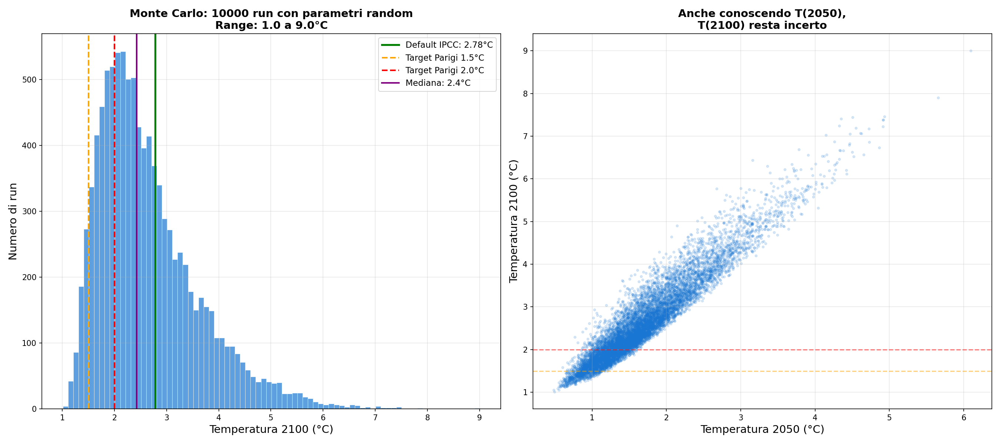
// Il Grande Jolly
Sezione 10. Aerosol: la principale fonte di spread nelle proiezioni
La iena a questo punto ha capito il meccanismo. “Qual è il parametro peggiore?” Si chiama aci_scale. Quarantatré righe di codice in forcing/aerosol/erfaci.py. Quarantatré righe che pesano più di tutto il resto messo assieme.
Gli aerosol (SO2, particolato, polveri) hanno un effetto raffreddante. Riflettono luce solare, modificano le nuvole. Ma quanto? L'IPCC AR6 dice tra -0.5 e -2.0 W/m². Un range enorme.
Uno potrebbe dire: “non è una manopola libera, è vincolato da osservazioni satellitari, forcing storico, pattern geografici.” Vero, ci sono vincoli. Ma i satelliti misurano proprietà ottiche degli aerosol, non il forcing radiativo. La conversione da proprietà ottiche a watt per metro quadro richiede modelli. E quei modelli hanno le loro assunzioni. È incertezza reale, non arbitraria, ma resta la più grande incertezza del sistema.
Ecco perché è il jolly. L'algebra è semplice:
Il forcing netto è una somma. GHG scalda, aerosol raffredda. Il netto decide la temperatura.
Se il forcing dei gas serra è +4.0 W/m² (ragionevolmente noto), allora:
- Con aerosol = -0.5 W/m²: netto = +3.5 W/m² → tanto riscaldamento
- Con aerosol = -2.0 W/m²: netto = +2.0 W/m² → poco riscaldamento
La differenza è 1.5 W/m². Quasi il 50% del segnale. Una delle componenti che contribuiscono maggiormente allo spread delle proiezioni. E se la combini con l'incertezza sulla sensitivity, puoi ottenere risultati molto diversi restando dentro regioni di parametri considerate plausibili.
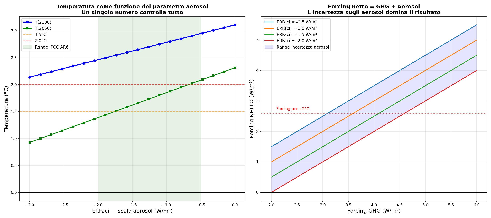
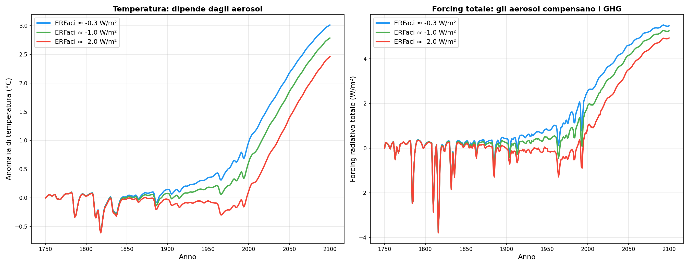
// La Circolarità
Sezione 11. Calibrato per fittare il passato, usato per predire il futuroLa iena fa la domanda giusta: “Ma il modello riproduce le temperature passate?”
Sì. Con i parametri default (quelli calibrati dall'IPCC), FaIR riproduce ragionevolmente bene le temperature dal 1850 al 2020. Fantastico. Solo che quei parametri sono stati scelti per riprodurre quelle temperature. È come dire che una curva di best fit passa per i punti che hai usato per calcolarla. Non è una conferma. È una tautologia.
La prova: prendo tre configurazioni di parametri diversi. Tutte “ragionevoli”. Tutte fittano ragionevolmente il passato. Ma per il futuro danno proiezioni diverse. Questo fenomeno ha un nome in modellistica: equifinalità. Molte combinazioni di parametri possono produrre lo stesso output storico e divergere nel futuro.
È il problema fondamentale di qualsiasi modello con più parametri che vincoli. E FaIR ha 2064 parametri.
L'analogia: hai 10 punti su un grafico. Puoi far passare infinite curve per quei 10 punti. Tutte “fittano i dati”. Ma estrapolate oltre il punto 10, vanno in direzioni completamente diverse. Quale è quella “giusta”? Non lo sai. E non puoi saperlo.
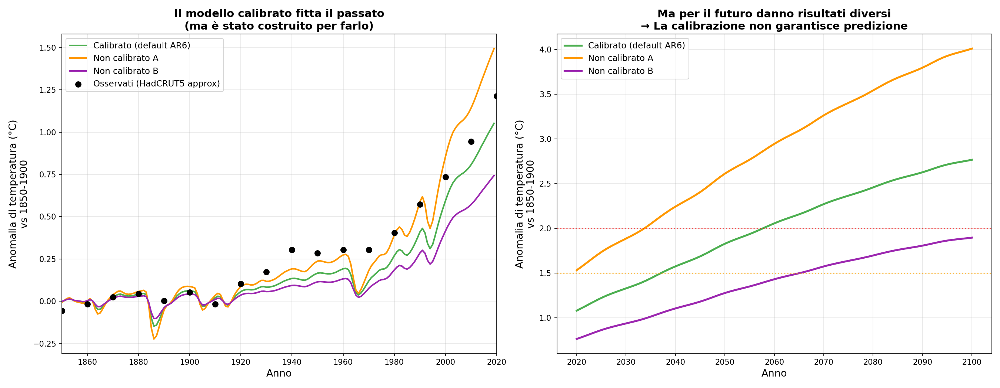
// Reverse Engineering
Sezione 12. Risultati molto diversi, parametri tutti plausibiliA questo punto faccio l'esperimento definitivo. Prendo lo scenario SSP2-4.5 e cerco combinazioni di parametri che producano temperature specifiche nel 2100. Tutti dentro range difendibili.
| Target | Ottenuto | Parametri |
|---|---|---|
| Nessun problema | +1.3°C | Aerosol forte, sensitivity bassa, forcing basso |
| Target Parigi | +2.1°C | Parametri moderatamente ottimisti |
| Default IPCC | +2.8°C | Default AR6 |
| Catastrofe | +6.3°C | Sensitivity alta, aerosol debole |
| Apocalisse | +8.8°C | Tutti i parametri al bordo alto |
Da 1.3 a 8.8 gradi. Stesse emissioni. Stesso scenario. Stesso modello. Stesse equazioni. Solo numeri diversi nelle celle di un CSV.
La iena mi guarda. “Quindi il modello non prevede niente.”
No. Il modello calcola. Prende i parametri che gli dai e produce un numero. Se gli dai parametri da catastrofe, produce catastrofe. Se gli dai parametri da “nessun problema”, produce nessun problema. La previsione la fa chi sceglie i parametri, non il modello.
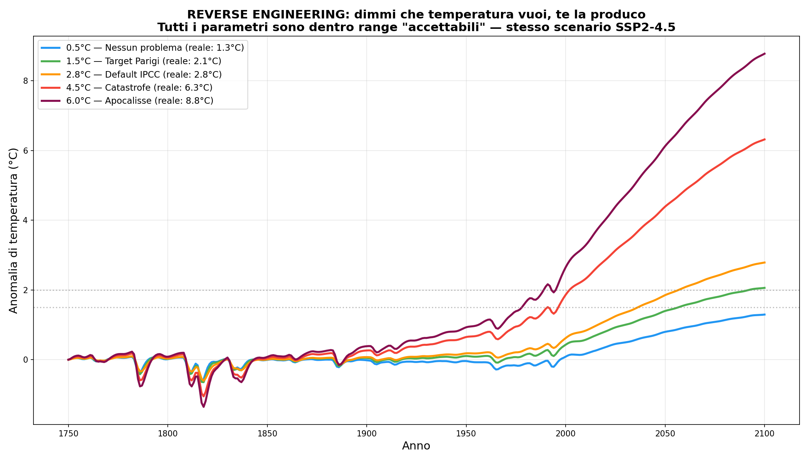
// Il Flusso Completo
Sezione 13. Dove entrano le scelteTutto insieme. Questo è FaIR 2.2.4 dall'input all'output, con ogni punto dove entra una scelta invece di una misura:
Sette passaggi. In ciascuno entra almeno un parametro scelto, non misurato. L'incertezza si propaga e si moltiplica. Il numero finale, quello che finisce nel titolo di giornale, quello per cui Marco compra la macchina elettrica, porta con sé tutta questa catena di scelte.
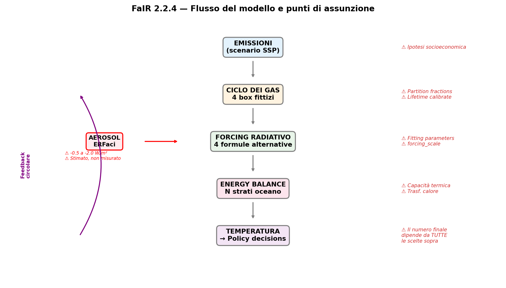
// Il Muro dell'Incertezza
Sezione 14. Ogni parametro sposta il risultatoMetto tutto in una tabella. Ogni riga è un parametro. Per ciascuno mostro il range accettato e quanto sposta la temperatura nel 2100:
| Parametro | Default | Range | Effetto su T(2100) |
|---|---|---|---|
| Climate Sensitivity (ECS) | ~3.0°C | 2.0–5.0°C | ±2.4°C |
| ERFaci (aerosol-nuvole) | ~-1.0 W/m² | -0.5 a -2.0 | ±1.5°C |
| Forcing 4×CO2 | 8.0 W/m² | 6.5–9.5 | ±0.8°C |
| forcing_scale CO2 | 1.0 | 0.75–1.25 | ±0.7°C |
| Ocean parameters | [8, 100, 300] | variabile | ±0.5°C |
| CO2 partition + lifetimes | vedi sopra | variabile | ±0.4°C |
| deep_ocean_efficacy | 1.28 | 1.0–1.6 | ±0.3°C |
| iirf_temperature | 4.0 | 0–8 | ±0.3°C |
| Formula GHG | meinshausen | 4 opzioni | ±0.2°C |
| TUTTI INSIEME | 1.7 – 7.7°C |
L'ultima riga è il muro. Da 1.7 a 7.7 gradi con lo stesso scenario di emissioni e parametri tutti dentro i range pubblicati nella letteratura peer-reviewed. Non è complottismo. È matematica.
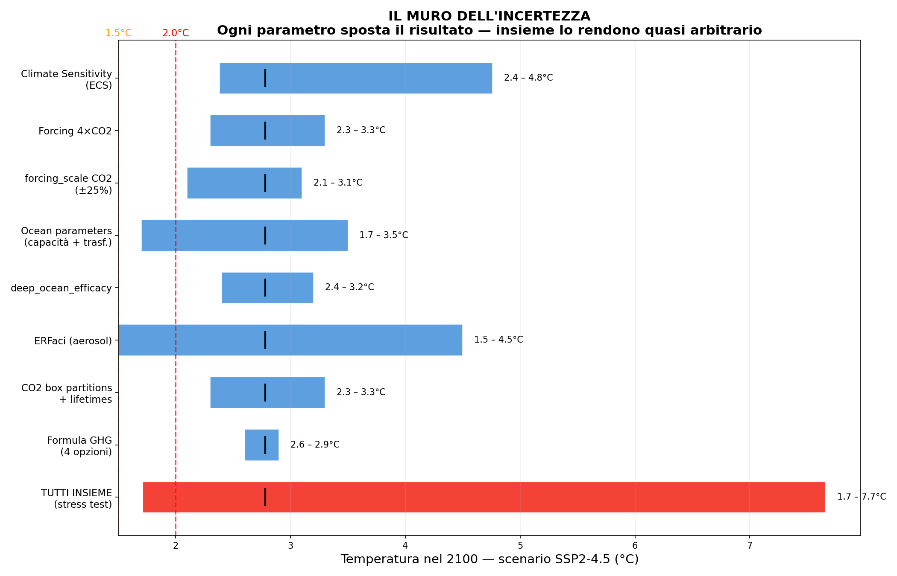
// Il Clima Ha Un Bug
Sezione 15. ConclusioneNon sto dicendo che il riscaldamento globale non esiste. Il segnale c'è. Sto dicendo che attribuirne con precisione cause e magnitudine, CO₂, variabilità naturale, contributo solare, dipende in modo critico dalle assunzioni del modello. E che la precisione con cui vengono comunicate le previsioni non riflette l'incertezza reale del sistema.
Uno potrebbe dire: “il modello non è pensato per dare previsioni puntuali. L'IPCC riporta sempre intervalli.” E avrebbe ragione. I climatologi lo sanno. Ma poi succede una cosa: il report diventa comunicato stampa, il comunicato stampa diventa titolo, il titolo diventa tweet, il tweet diventa “gli scienziati dicono che moriamo tutti nel 2050”. L'intervallo scompare. Resta il numero. E dal numero al cinquantamila euro di macchina elettrica di Marco il passo è breve.
Il modello non ha un bug nel codice. Il codice funziona. Il bug è nel passaggio dal modello al giornale. Un ventaglio diventa un punto. Un punto diventa un titolo. Un titolo diventa politica. E la politica muove trilioni.
Marco ha comprato una macchina elettrica per salvare il pianeta. Basandosi su un numero che esce da 2001 righe di Python e 2064 parametri calibrati. Se lo sapesse, la comprerebbe lo stesso? Forse sì. Ma per ragioni diverse. E le ragioni contano.
La iena: “Lo ripromuovi?”
No. È un completo imbecille.
FaIR 2.2.4. 2001 righe di codice. 2064 parametri calibrati. 4 formule dalla stessa radice. Un emulatore, non la fisica. I climatologi lo sanno. I giornalisti no. Il ventaglio diventa punto, il punto diventa titolo, il titolo diventa politica. Il modello fa il suo lavoro. La comunicazione no.
Tutto il codice di questa analisi è open source e riproducibile: FaIR su GitHub | Script di analisi
Signal Pirate